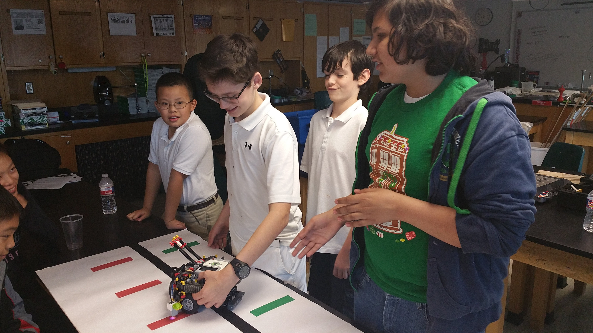
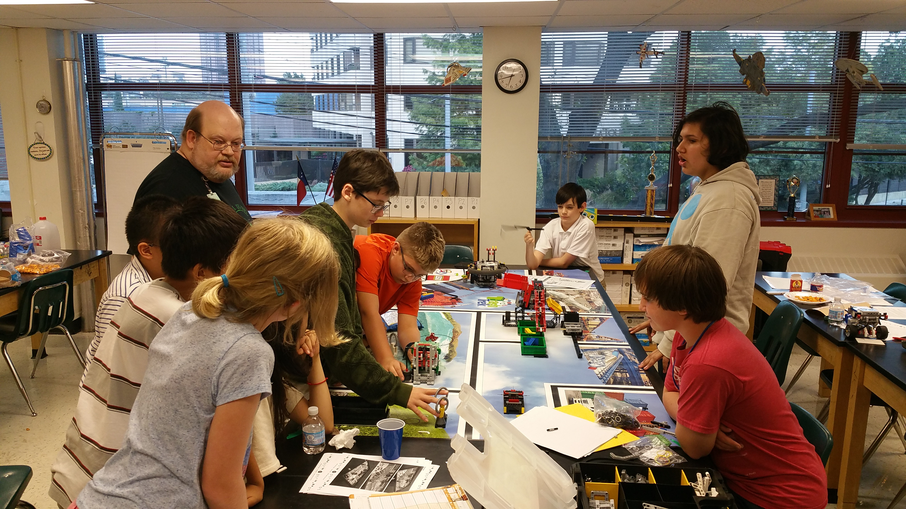

By Tycho
Task: Help the William B. Travis FLL Team

Starting September 10th and lasting through today, I went to our old middle school, William B. Travis, to help their newer
FLL team with robot design and programming. There were also some one on one sessions during practice to teach their main programmer,
who used to be on the older FLL team until it disbanded, how to use the code library that we had previously written. I also went
to a scrimmage with them to help them come up with new design ideas and strategies for the game.

Reflections
September 3 Practice:
First meet; set up the field and build the field elements; talk about the project
September 10 Practice:
Project talk; we talked about earlier projects and came up with ideas- people who came up with ideas were assigned to research further
September 17 Practice:
Talked about programming; I introduced them to our PID code that we wrote for EV3. More project brainstorming. Research done was reported back.
September 24 Practice:
Demo of gyro sensor; how to install and how to program. Talked about core values and team logo.
October 1 Practice:
Focused on strategy and robot build; designing a launching jig for the robot and taught arrays in EV3.
October 8 Practice:
Build team refined chassis and attachments; beginning of game programming in earnest. Taught line following.
October 15 Practice:
Wrote a list of our main goals that we wanted to have done by the upcoming scrimmage; talked about game choreography.
 October 22 Practice:
Refined robot game program & design; settled on project idea (recyclable pizza box)
October 24 1-on-1 & After-school Prep:
Helped Clay, a 7th grader who was on our old FLL team until it disbanded, prepare for the TA role in the beginner after-school robotics club that we established
when we first founded our team. I created kits for the basic robots and taught him the basics of what to talk about. I also taught him how to use the core functions Alisa and
I wrote for FLL (calibration, line following, maintaining a heading, gyro turns, etc.)so that he could share the knowledge with his team.
October 29 Practice:
Last preparations before the scrimmage that weekend. Refined the game program and launching jog for the robot.
October 31 Scrimmage:
Helped the team get an idea of what the actual competition would be like; we practised game choreography and handling the robot.
November 5 Practice:
Wrote and practised the script and song for the project and refined some design flaws discovered at the scrimmage.
November 12 Practice:
Refined the design and project; designed and built a new launching jig that could be easily tuned using worm gears to launch at a different angle.
November 19 Practice:
Talked about strategy and tuned the game program; practised the project
November 26 Practice:
Third to last practice - Significant amount of time practising the project and tuning the game program.
December 3 Practice:
Last practise - Final preparations before the competition; tuning and logistics.
October 22 Practice:
Refined robot game program & design; settled on project idea (recyclable pizza box)
October 24 1-on-1 & After-school Prep:
Helped Clay, a 7th grader who was on our old FLL team until it disbanded, prepare for the TA role in the beginner after-school robotics club that we established
when we first founded our team. I created kits for the basic robots and taught him the basics of what to talk about. I also taught him how to use the core functions Alisa and
I wrote for FLL (calibration, line following, maintaining a heading, gyro turns, etc.)so that he could share the knowledge with his team.
October 29 Practice:
Last preparations before the scrimmage that weekend. Refined the game program and launching jog for the robot.
October 31 Scrimmage:
Helped the team get an idea of what the actual competition would be like; we practised game choreography and handling the robot.
November 5 Practice:
Wrote and practised the script and song for the project and refined some design flaws discovered at the scrimmage.
November 12 Practice:
Refined the design and project; designed and built a new launching jig that could be easily tuned using worm gears to launch at a different angle.
November 19 Practice:
Talked about strategy and tuned the game program; practised the project
November 26 Practice:
Third to last practice - Significant amount of time practising the project and tuning the game program.
December 3 Practice:
Last practise - Final preparations before the competition; tuning and logistics.